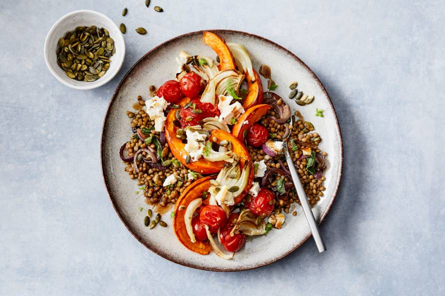

- 10 min
- 750 kcal
- Vegetarisch
Vind makkelijk het beste recept
Bekijk alle recepten ->Mmm, comfort food!
- 50 min
- 465 kcal
- Vegetarisch
Vegetarisch stoofpotje met paddenstoelen en aardappelpuree
- 15 min
- 560 kcal
- Glutenvrij
- 4
Snelle Mexicaanse bonenschotel
- 10 min
- 750 kcal
- Vegetarisch
Jackfruitgoulash
Gezond en voordeling koken met Prijsfavorieten
- 25 min
- 525 kcal
- Vegetarisch
Pasta in romige tomatensaus met spinazie
Nu in het magazine
Het is zomer en dat is al genoeg reden voor een feestje! In dit zonnige vakantienummer vind je meer dan genoeg inspiratie om de lekkerste zomergerechten thuis te maken. Bekijk het magazine online of doe inspiratie op bij:
- Alle nieuwe recepten
- Wat eten we vandaag?
- Traybakes
- Wraps
- Lunch to stay or to go?
- Zalm
- Broccoli
Wie kookt er met Hugo?
In de videoserie ‘Hugo’s Cover Up’ maakt tv-chef Hugo Kennis samen met een bekend persoon de voorkant van Allerhande. Eerder al eens met Victor van First Dates, deze keer met Jasper Gottlieb! Benieuwd hoe dat afloopt? Check hier de video.
Pompoen? Doen!
- 
- 30 min
- 500 kcal
- Vegetarisch
-
Geroosterde pompoemlinzensalade met venkel & ricotta